It's happening.
The new Audi Q3.
The new Audi Q3 is a family SUV with great all-round talents. In the second generation it appears not only visually more self-confident, but offers far greater utility value thanks to abundant space, comprehensive adaptability and many practical details. The Singleframe in octagon design and large side air inlets characterize the masculine front-end. Large and adaptable: Depending on the position of the rear seats and backrests, the luggage compartment capacity totals 530 or 675 liters (18.7/23.8 cu ft). With the backrests folded down the figure rises to 1,525 liters (53.9 cu ft). Furthermore the new Audi Q3 features a digital cockpit and a large MMI touch response Numerous infotainment solutions from the full-size segment connect the compact SUV with its environment.

Brochure
Price List

Dimensions

Arrange a Test Drive
 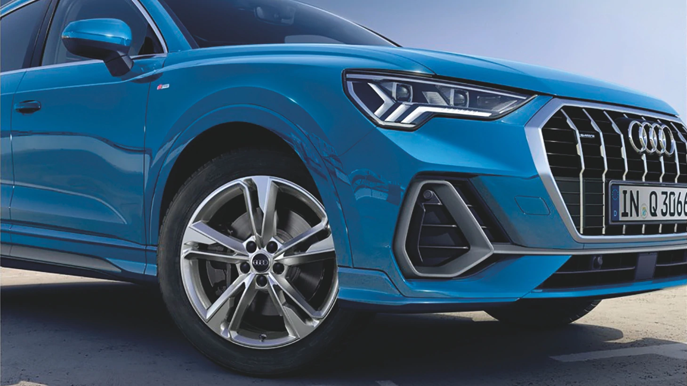
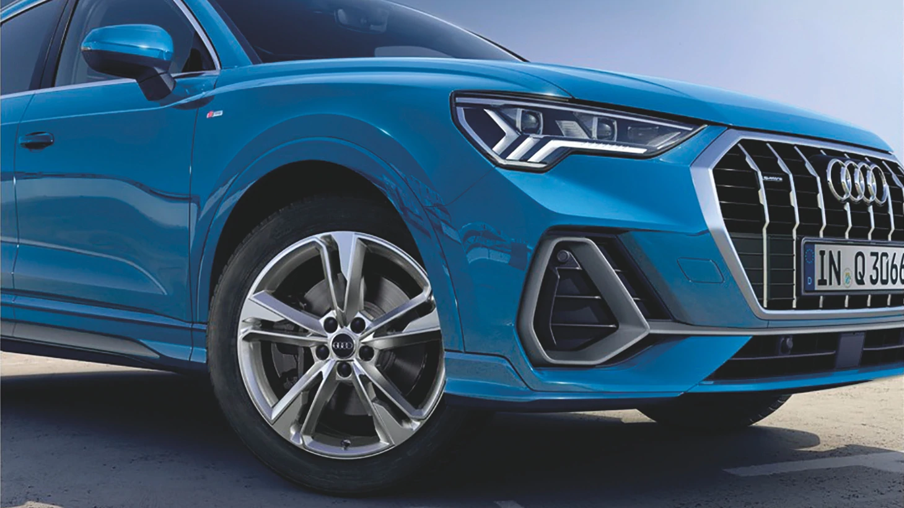

 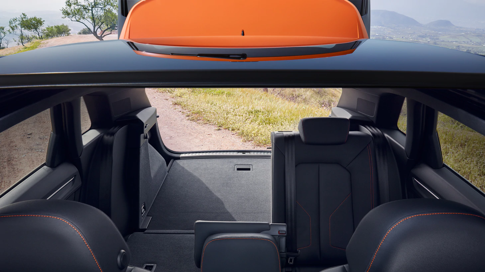
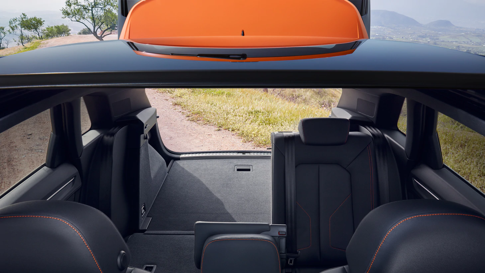
 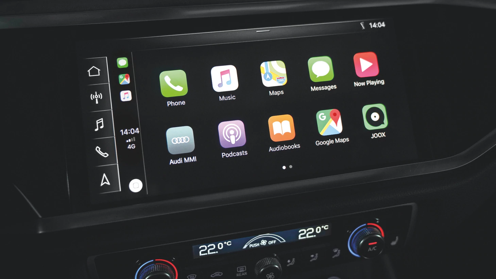
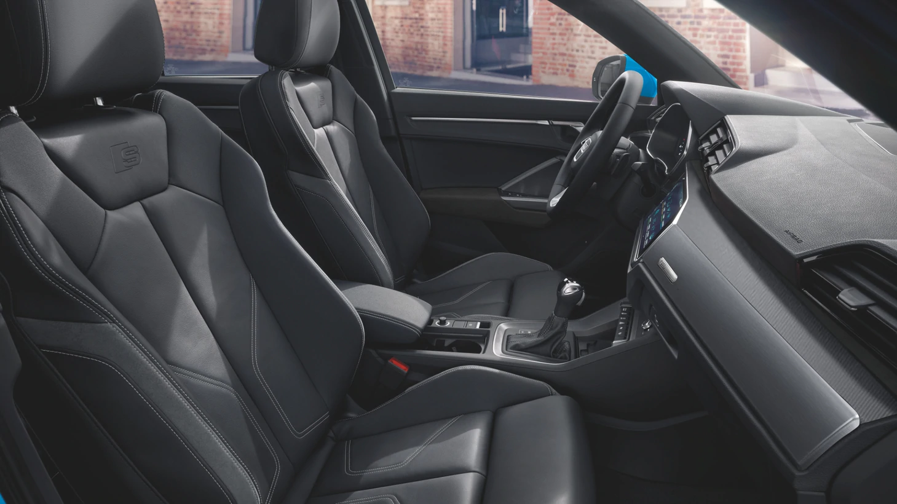
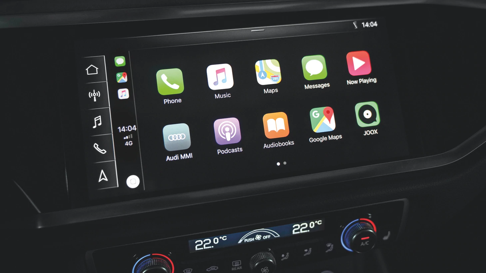
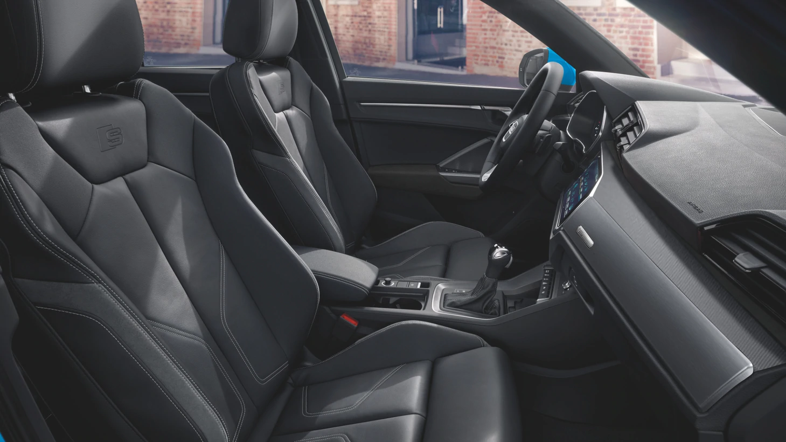
 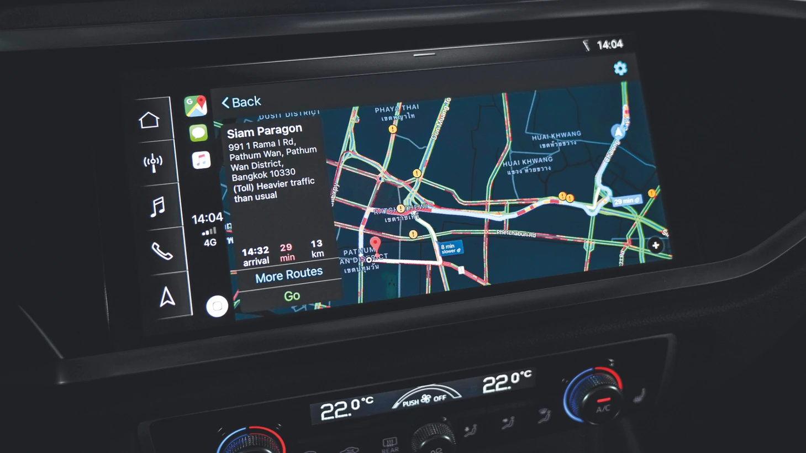
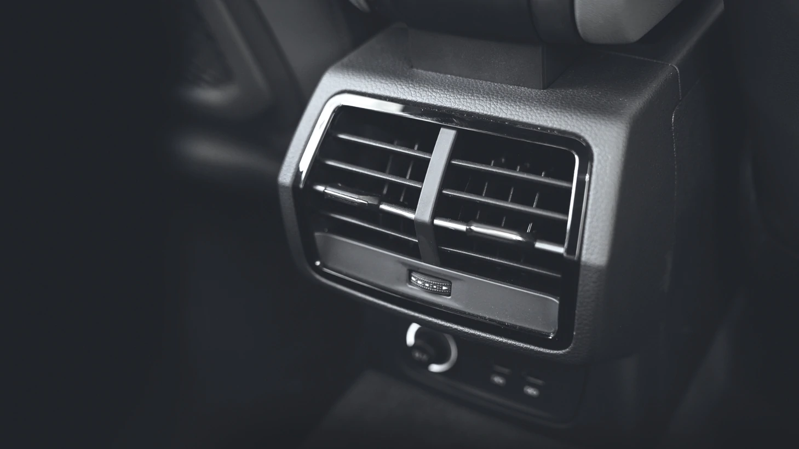
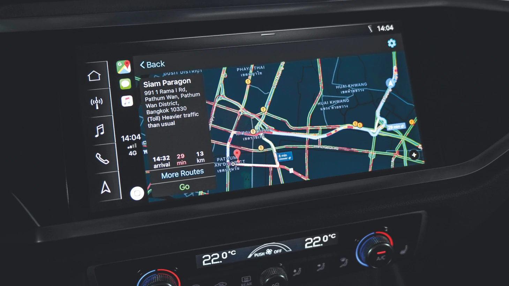
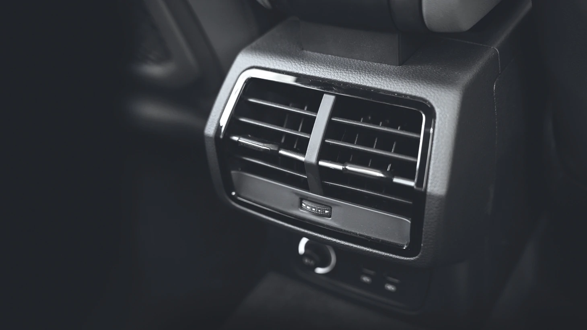